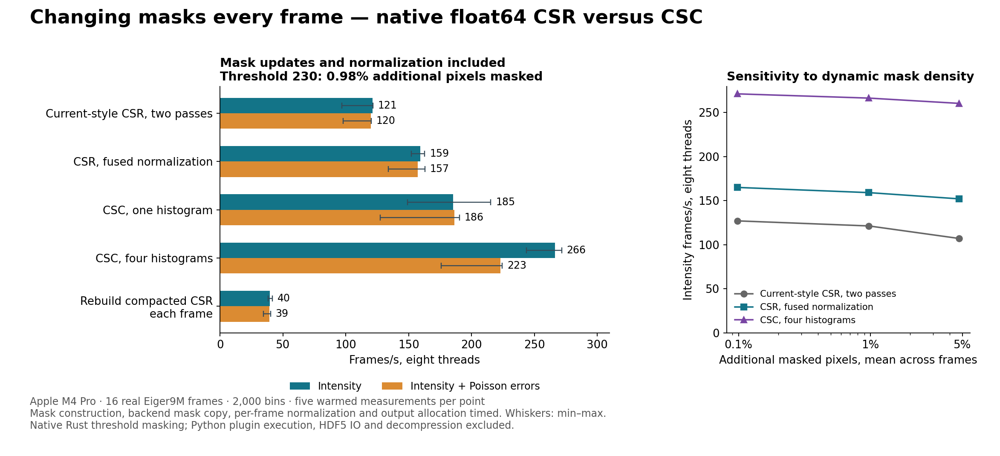

Measured November 5, 2026 on the same Apple M4 Pro and 16 real Eiger9M frames. All pixels, weights, corrections, sums and outputs are float64. Every timed frame constructs a new threshold mask and recomputes normalization. No table rebuild is required for either runtime-mask layout.

Threshold 230: mean 0.977% additional masked pixels beyond the same static mask. Masks are different for every frame, including wraparound. Eight threads, five warmed measurements per variant/error mode; medians shown.
| Kernel | Intensity fps | Speedup | Intensity + Poisson fps | Speedup |
|---|---|---|---|---|
| Current-style CSR, two passes | 121.3 | 1.00× | 119.8 | 1.00× |
| CSR, fused normalization | 159.1 | 1.31× | 157.2 | 1.31× |
| CSC, one histogram | 185.3 | 1.53× | 186.3 | 1.55× |
| CSC, four histograms | 266.4 | 2.20× | 223.1 | 1.86× |
| Rebuild compacted CSR each frame | 39.8 | 0.33× | 39.3 | 0.33× |
The current-style CSR driver uses unchanged production row arithmetic and recalculates normalization in a separate serial-per-frame traversal, then integrates signal and variance in parallel rows. Fused CSR uses the identical production row arithmetic but computes normalization during that same signal traversal. CSC checks the mask once per input pixel and accumulates signal, normalization and variance together. Four interleaved histograms reduce dependent updates to the same bins. The per-frame recompaction diagnostic filters the original coefficient table and constructs a new execution table for each frame, including allocation/index conversion, normalization and integration.
Recommendation: Keep geometry tables independent of per-frame masks. Fused normalization is a useful CSR improvement, and four-histogram CSC is the faster prototype for this changing-mask batch workload. Rebuilding compacted CSR every frame is much slower in this straightforward implementation. Static-mask compaction remains a separate option for masks reused over many frames.
Thresholds were selected near the pooled 99.9th, 99th and 95th percentiles of static-valid real pixel intensities. The thresholds remain fixed; the changing images produce the changing masks. Fractions below refer only to otherwise static-valid pixels. Intensity throughput includes mask updates and normalization.
| Threshold | Mean extra mask | Per-frame range | Current CSR fps | Fused CSR fps | CSC four-histogram fps |
|---|---|---|---|---|---|
| 323 | 0.098% | 0.025–0.319% | 127.1 | 165.0 | 271.2 |
| 230 | 0.977% | 0.363–2.289% | 121.3 | 159.1 | 266.4 |
| 207 | 4.709% | 2.603–7.889% | 107.2 | 152.1 | 260.4 |
| Threads | Current CSR | Fused CSR | CSC four | CSR + errors | Fused CSR + errors | CSC four + errors |
|---|---|---|---|---|---|---|
| 1 | 17.3 | 24.3 | 47.2 | 16.8 | 23.9 | 38.4 |
| 4 | 68.2 | 95.3 | 179.9 | 66.3 | 92.8 | 146.3 |
| 8 | 121.3 | 159.1 | 266.4 | 119.8 | 157.2 | 223.1 |
These are independent 16-frame batches. CSC uses parallelism across frames; this does not establish its latency or speed on one image.
The threshold/static-mask combination and explicit backend-owned mask copy are performed in native Rust inside every full timing. The separately measured mask-update stage reaches 1765.2 frames/s at eight threads (aggregate throughput). It is already included in the integration numbers above. This represents the threshold masking rule used by Dioptas, not Python/NumPy/plugin dispatch overhead or the cost of cosmic-ray/powder-outlier detection.
The current-style baseline is verified byte-identical to actual copied production cache invalidation plus integration for all frames, thresholds and both error modes. Fused CSR is also byte-identical to current CSR. Strict CSC and strict CSR are byte-identical, including Poisson sigma. Fast CSC differs only through summation order: worst four-histogram intensity relative L2 difference 3.94e-16; worst across all fast variants 4.42e-15. No float32 weights or accumulators are used.
No production library code was modified. This isolated prototype needs production mask lifecycle/API work, memory assessment, single-frame latency and 2D validation before adoption. Python set_mask calls and cache-lock bookkeeping are not timed; mask ownership copying and all normalization arithmetic are timed. System activity varied during measurement; min–max ranges, raw blocks and observed competing CPU load are retained. No samples were removed.
CARGO_TARGET_DIR=/Users/clemens/Programming/Dioptrin/target cargo test --manifest-path Cargo.toml --offline CARGO_TARGET_DIR=/Users/clemens/Programming/Dioptrin/target cargo build --release --manifest-path Cargo.toml --offline python3 run_benchmark.py python3 summarize.py
Large readonly frame and LUT files remain at their existing /tmp paths, recorded in the runner and input provenance; they are not copied into this report. The runner preserves native JSONL and enriched JSON records for every process.